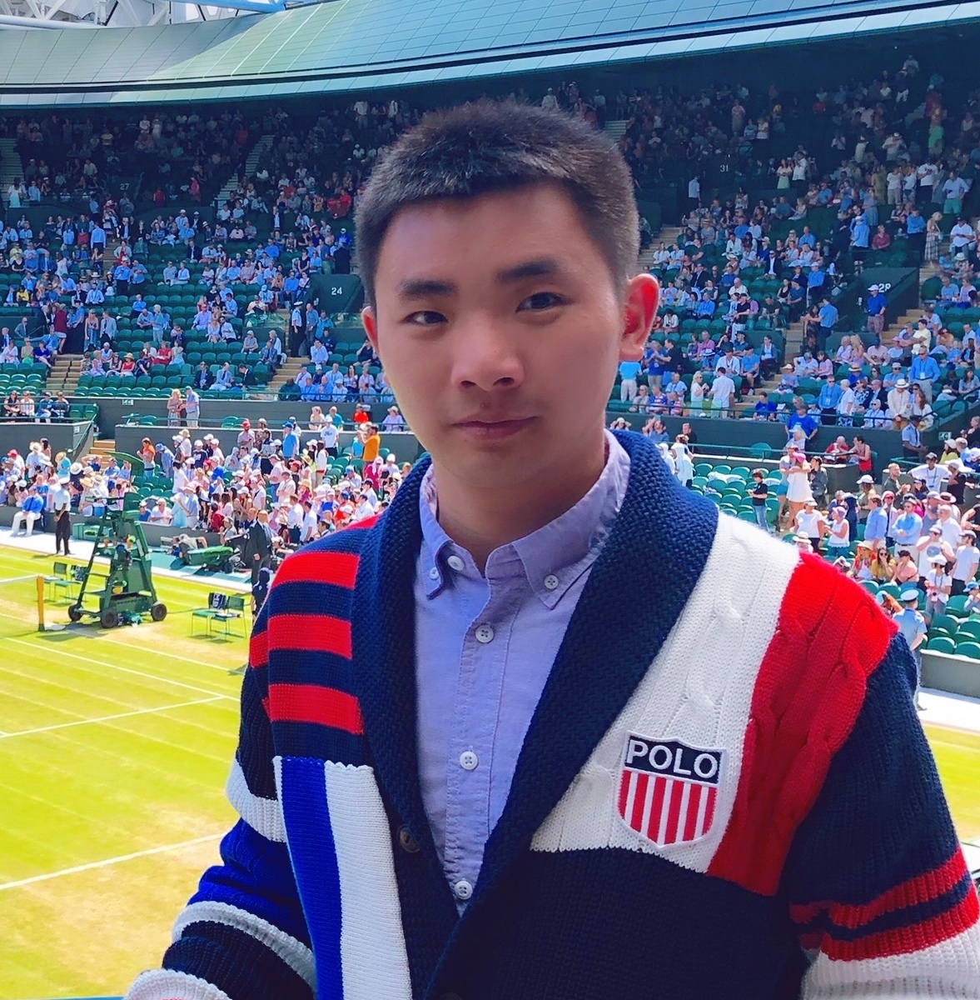
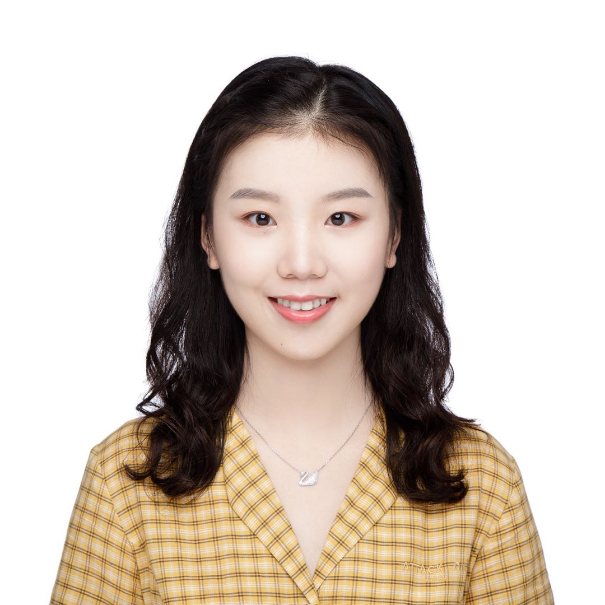

Principal Investigator

Dr. Bo YANG
Assistant Professor (2020.11-)
Department of Computing, HK PolyU
DPhil/PhD@Oxford, MPhil@HKU, BEng@BUPT
Homepage /
Google Scholar /
Email
PhD Students

Yafei YANG
2021.09 -
BEng@HKU, First Class Honours; HKPFS
Homepage /
Email
Research Interests:
- unsupervised learning
- object-centric scene understanding
Jinxi LI
2021.09 -
MSc@NEU(US); BSEcon@PKU
Google Scholar /
Email
Research Interests:
- 3D computer vision
- neural rendering
Ziyang SONG
2021.09 -
MEng, BEng@XJTU, Honors Youth Program
LinkedIn /
Google Scholar /
Email
Research Interests:
- 3D computer vision
- point cloud analysis
Zihui ZHANG
2021.09 -
MSc@XJTU; BSc@UESTC
Email
Co-supervised with Dr. Bo Li
Research Interests:
- 3D computer vision
- point cloud analysis
Penghui XU
2022.01 -
MSc@HK PolyU; BEng@SCAU
Email
Co-supervised with Dr. Li-Ta Hsu
Research Interests:
- positioning
- sensor fusion
MSc Students
Lu CHEN
2021.05 -
MSc@HK PolyU
Email
Research Assistants
Hongkang SONG
2021.12 -
MSc@ICL, Distinction;
BEng@KCL, First Class Honours
Email
Visiting Scholars
Bing WANG
2021.05 -
DPhil@Oxford
Homepage /
Google Scholar /
Email
Research Interests:
- robotic vision
- scene reconstruction and understanding
- neural rendering
Undergraduate Researchers
Yuejia ZENG
2021.10 -
Undergraduate@HK PolyU
Email
Former Members
Donghui SHEN
2021.08 - 2021.12: Research Assistant@vLAR
MSc, BSc@SDU
Xiaodong CHEN
2021.08 - 2021.12: Research Assistant@vLAR
MSc@HKUST